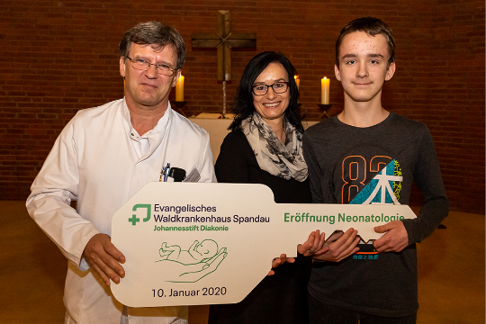
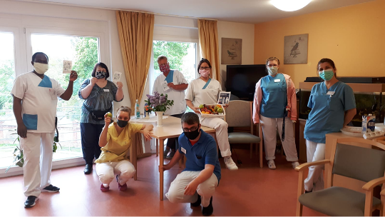
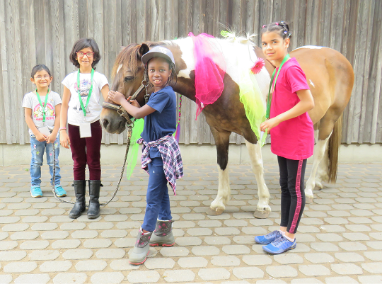

Willkommen beim Jahresüberblick der Johannesstift Diakonie für 2020. Sie finden hier wichtige Kennzahlen und Fakten, Projekte und Ereignisse als Auszüge aus dem aktuellen Geschäftsbericht.
Besonders den Krankenhäusern forderte das Jahr 2020 außergewöhnliches Engagement ab.
Besonders den Krankenhäusern forderte das Jahr 2020 außergewöhnliches Engagement ab.
Besonders den Krankenhäusern forderte das Jahr 2020 außergewöhnliches Engagement ab.
Die Leistungsfähigkeit der Johannesstift Diakonie, unserer Einrichtungen und Mitarbeitenden spiegelt sich in vielen Zahlen wieder.
Diese Auswahl gibt einen Eindruck der Größenordnungen. Weiter unten finden Sie weitere Daten und Fakten aus unserem Lagebericht 2020.
Mitarbeitende
Mio. EUR Konzerngesamtleistung
Betten
Fachleistungsstunden in der Jugendhilfe
Mio. EUR Investitionen
Plätze in der Behindertenhilfe
Pflegetage
ambulante Fälle
Stationäre Patient*innen
Casemix-Punkte
Ausgezeichnete Versorgung im Evangelischen Geriatriezentrum Berlin (EGZB). Die Fachklinik für Altersmedizin erhält als zweites Berliner Krankenhaus das Qualitätssiegel Geriatrie.
Für einen optimalen Start ins Leben: Am Evangelischen Waldkrankenhaus hat die neue Neonatologie eröffnet. Die Intensivstation für Früh- und Neugeborene hat 21 Betten, zehn Familienzimmer und ein Schlaflabor
Die Klinik Amsee eröffnet ein neues Medizinisches Versorgungszentrum im Alten Bahnhof von Waren. Ab sofort werden hier Patient*innen mit Lungenerkrankungen ambulant behandelt.
Deutschlands beste Arbeitgeber: Johannesstift Diakonie belegt Platz 9 in der Branche Gesundheit und Soziales.
Livegang: Die Website der Johannesstift Diakonie präsentiert sich in einem neuen, modernen Design. Der Reihe nach werden nun alle Einrichtungen der Johannesstift Diakonie gAG in den neuen Auftritt integriert.
Der erste Lockdown: Krankenhäuser, Pflegeheime und Einrichtungen der Jugend- und Behindertenhilfe schließen ihre Türen für Besucher*innen. Hunderte Heimarbeitsplätze werden in Rekordzeit eingerichtet, um Kontakte zu reduzieren. Schulen und Kitas stellen auf Notbetreuung um.
Die Kliniken rüsten auf: Die Johannesstift Diakonie erhält 118 zusätzliche Beatmungsgeräte und baut damit die intensivmedizinische Versorgung aus. Gleichzeitig wird die Anzahl elektiver Eingriffe drastisch reduziert, um weitere Kapazitäten für die Versorgung von Covid-19-Patient*innen zu schaffen.
Der Corona-Blog geht live. Ab sofort finden Mitarbeitende der Johannesstift Diakonie alle wichtigen Vorstands-Informationen zur Covid-19-Pandemie an einem Platz.
Mit Unterstützung der Werner und Maren Otto Stiftung wird das Kompetenzzentrum Palliativ- und Hospizarbeit in der Paul Gerhardt-Diakonie Akademie realisiert.
Das Katharina von Bora Hospiz richtet eine Trauerhotline für Angehörige ein.
Kinder beflügeln realisiert eine Kindernotbetreuung im Evangelischen Geriatriezentrum Berlin (EGZB) und dem Evangelischen Krankenhaus Hubertus. Über einen Zeitraum von 5 Wochen wurden hier täglich bis zu 14 Kinder von Mitarbeitenden betreut.
Materialbeschaffung auf Umwegen: Als starke Säule in der Pandemie stellt der Zentraleinkauf der Johannesstift Diakonie mit Knowhow und Kreativität die Materialversorgung in den Einrichtungen sicher.
Der Leitenden Theologe, Pfarrer Dr. Werner Weinholt, wird neuer Geschäftsführer der Simeon Hospiz GmbH.
Die Ausbildung nach dem neuen Pflegeberufegesetz zur*zum Pflegefachfrau*mann startet. Am 01. April begrüßt die Gesundheitsfachschule Berlin 35 begeisterte Auszubildende.
Als erste Frau übernimmt Anne Hanhörster die Funktion der Stiftsvorsteherin des Evangelischen Johannesstifts.
Die Mitarbeiterparty wird aufgrund der Corona-Pandemie abgesagt. Davon betroffen sind auch der Run of Spirit und der Firmenstaffellauf. Kurzerhand wird die Aktion „Jeder läuft für sich und doch laufen alle zusammen“ initiiert. Der Vorstand der Johannesstift Diakonie spendet hier für jede gelaufenen Kilometer an den Johannes Hospiz e.V.
Neuer Service für werdende Eltern: Das Martin Luther Krankenhaus organisiert den Geburtsinfoabend erstmalig als Facebookveranstaltung. Das neue Corporate Wording Manual der Johannesstift Diakonie wird verabschiedet. Hier finden Beschäftigte ab sofort alle wichtigen Regelungen für eine gendergerechte Sprache.
Wir feiern den Internationalen Tag der Pflege. Unser Vorstand bedankt sich bei den zahlreichen Pflegeteams der Johannesstift Diakonie mit einem bunten Obstkorb für die bedeutsame Arbeit.
Der Geschäftsbericht der Johannesstift Diakonie ist erstmals online abrufbar. Unter www.gb19.johannesstift-diakonie.de können alle wichtigen Informationen eingesehen werden.
Das Medizinische Versorgungszentrum (MVZ) an der Evangelischen Elisabeth Klinik bietet seit Juni eine ambulante radiologische Diagnostik mit Magnetresonanztomograf (MRT), Mehrzeilen-Computertomograf (CT) und volldigitalem Röntgengerät an.
Das Evangelische Waldkrankenhaus Spandau führt erste roboterunterstützte Knie-Endoprothetik durch.
Die Employer Branding Kampage der Johannesstift Diakonie „Was treibt dich an?“ geht es den Start. 47 Mitarbeiter*innen haben sich hierfür professionell ablichten lassen und erzählen, warum sie gern in der Johannesstift Diakonie arbeiten. Alle Bilder und Geschichten werden auf der Unternehmenshomepage unter “Wir sind die Johannesstift“ präsentiert.
Die Stiftung Evangelisches Johannesstift SbR (EJS) wird für ihr herausragendes ethisch-nachhaltiges Vermögensmanagement und dessen Umsetzung im stiftungseigenen Spezialfonds „EJS Stiftungsfonds“ von der Jury des „portfolio institutionell Awards 2020“ mit einem Preis in der Kategorie „Beste Stiftung“ ausgezeichnet.
Die Johannesstift Diakonie gAG begrüßt die Reha-Akademie Berlin als neue Bildungseinrichtung in der Unternehmensgruppe. Seit dem 01. September 2020 gehört diese nun offiziell zum Evangelischen Waldkrankenhaus Spandau.
Vom 27. bis zum 31. Juli richtet das Team von „Kinder beflügeln“ das Ferienbildungsprogramm „KinderSommerUni 2020“ auf dem Gelände des Evangelischen Johannesstifts in Berlin-Spandau aus. Kinder aus schwierigen Familienverhältnissen können hier Bildungserfahrungen machen, zu denen sie sonst nicht die Möglichkeit haben.

Unter dem Motto „Alles bleibt anders“ findet am 05. September der Tag der Ehrenamtlichen statt. Zu den Feierlichkeiten werden in diesem Jahr 80 Jubilar*innen geladen, die für ihr langjähriges ehrenamtliches Engagement bei einem Festgottesdienst in der Stiftskirche gewürdigt werden.
Die inklusive „Schule ohne Grenzen“ feiert Richtfest. In dem neuen Schulgebäude sollen künftig Schüler*innen der Evangelischen Schule Spandau und der August Hermann Francke Schule gemeinsam unterrichtet werden.
Am 01. Oktober 2020 begrüßt die Johannesstift Diakonie ein neues Vorstandsmitglied. Diplom-Volkswirt Christoph Dürdoth übernimmt als Vorstand Personal künftig die Verantwortung für diesen Bereich und folgt damit auf Andreas Arentzen, der in den Ruhestand verabschiedet wird.
Überführung der Johannesstift Akademie in den Betreib der Paul-Gerhardt-Stiftung und damit Realisierung einer verbunden Akademie für die Johannesstift Diakonie an drei Standorten.
Das Evangelische Krankenhaus Hubertus wird als einziges deutsches Krankenhaus vom internationalen Umweltschutz-Netzwerk Health Care Without Harm (HCWH) zum KlimaChampion 2020 erklärt und mit einer Silbermedaille geehrt.
Zweiter Lockdown: Erneut schließen die Krankenhäuser, Pflegeheime, Schulen, Kitas und Einrichtungen der Jugend- und Behindertenhilfe ihre Türen. Anders als im ersten Lockdown erhalten Besucher*innen mit einem negativen Corona-Test-Ergebnis jedoch weiterhin Zutritt zu den Einrichtungen. Die Homeoffice-Arbeit wird, wo möglich, auf 100 Prozent ausgeweitet.
Zweiter Lockdown: Erneut schließen die Krankenhäuser, Pflegeheime, Schulen, Kitas und Einrichtungen der Jugend- und Behindertenhilfe ihre Türen. Anders als im ersten Lockdown erhalten Besucher*innen mit einem negativen Corona-Test-Ergebnis jedoch weiterhin Zutritt zu den Einrichtungen. Die Homeoffice-Arbeit wird, wo möglich, auf 100 Prozent ausgeweitet.
Der Adventsgottesdienst der Johannesstift Diakonie und des Evangelischen Johannesstifts findet erstmalig digital statt. Über den unternehmenseigenen Youtube-Kanal können Interessierte den andächtigen Worten von Pfarrerin Anne Hanhörster, Pfarrer Dr. Werner Weinholt und Diakon Ingo Moy lauschen und die Verleihung der goldenen Kronkreuze durch die Direktorin des DWBO Pfarrerin Barbara Eschen live verfolgen. Aufgrund der Kontaktbeschränkungen nahmen in diesem Jahr vier Stellvertreter die Ehrung für alle Jubilare entgegen.
Weihnachtsaktion mal anders: Mit ihrem Foodtruck unterstützt die InCluisine den Schlagersänger Frank Zander bei seiner Tour durch Berlin und beschert Obdachlosen mit einem leckeren Festessen eine Weihnachtsfreude der besonderen Art.
In den Pflegeeinrichtungen starten mobile Impfteams mit der Corona-Schutzimpfung von Bewohner*innen und Mitarbeitenden.